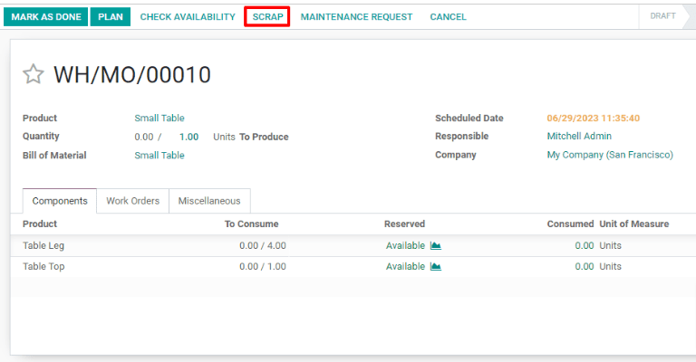
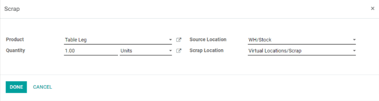

Desechar durante la fabricación¶
Es posible que durante el proceso de fabricación sea necesario desechar componentes o productos ya terminados si estos están dañados o no son usables por cualquier otra razón.
De manera predeterminada, al desechar un componente o un producto terminado, se elimina del inventario físico y se coloca en una ubicación virtual llamada Ubicaciones virtuales/Desechos. Una ubicación virtual no es un espacio físico, sino un lugar asignado en Odoo que se usa para rastrear elementos que ya no existen en el inventario físico.
Fabricación de Odoo le permite desechar tanto los componentes como los productos terminados dentro de una orden de fabricación. El tipo específico de artículo que se puede desechar durante una orden de fabricación depende del estado del proceso de fabricación.
Truco
Puede ver las órdenes de desecho en . Cada orden de desecho muestra la fecha y la hora en la que se creó la orden, junto con el producto y la cantidad desechada.
Para ver la cantidad total de cada elemento desechado vaya a y luego elimine el filtro de Interno de la barra de Buscar… para mostrar todas las ubicaciones virtuales. Desde la lista, seleccione la ubicación llamada Ubicaciones virtuales/Desechos.
Desechar componentes de fabricación¶
Para desechar componentes durante el proceso de fabricación, vaya a , luego seleccione una orden de fabricación o haga clic en Crear para configurar una nueva. Si crea una nueva orden de fabricación, seleccione un producto desde el menú desplegable Producto y luego haga clic en Confirmar.
Una vez que confirmó la orden, aparecerá un botón de Desechar en la parte superior de la página. Haga clic en el botón y aparecerá una ventana emergente de Desechar.
Desde el menú desplegable del Producto en la ventana emergente de Desechar, seleccione el componente que va a desechar, luego ponga la cantidad en el campo de Cantidad. Por último, haga clic en Validar para desechar el componente.
Importante
Antes de hacer clic en Marcar como validado en la orden de fabricación considere que solo los componentes del producto terminado se pueden desechar, no el producto terminado en sí. Esto es porque Odoo reconoce que el producto terminado no se puede desechar antes de ser fabricado.
Después de desechar un componente, continúe el proceso de fabricación usando la cantidad requerida del componente que desechó. El número de existencias disponibles del componente que desechó se actualiza y refleja tanto la cantidad desechada como la cantidad utilizada durante la fabricación.
Example
Si la fabricación de una mesa requiere cuatro unidades de patas de mesa y dos unidades de dichas patas se desecharon durante el proceso de fabricación, la cantidad total utilizada de patas de mesa será de seis: cuatro unidades usadas para fabricar la mesa y dos unidades desechadas.
Componentes de desecho vistos desde una tableta¶
Los componentes tambi√©n se pueden desechar desde la vista de tableta de fabricaci√≥n. Para hacerlo, seleccione la pesta√±a √ìrdenes de trabajo en una orden de fabricaci√≥n. Luego haga clic en el icono de üì± (vista de tableta) para una orden de trabajo.
Con la vista de tableta abierta, haga clic en el botón ☰ (menú) que se ubica en la parte superior izquierda de la pantalla, luego seleccione el botón de Desechar en la ventana emergente del Menú. Aprecerá la ventana emergente de Desechar.

Por último, seleccione un componente del menú desplegable de Producto y escriba la cantidad a desechar en el campo Cantidad. Haga clic en Validar para desechar el componente.
Desechar productos terminados¶
Odoo también le permite desechar productos terminados desde una orden de fabricación una vez que la orden esté completa. Después de hacer clic en Marcar como terminada, haga clic en el botón de Desechar para que aparezca su ventana emergente.
Puesto que los componentes se utilizaron para crear el producto terminado, ya no aparecerán en el menú desplegable de Producto. En su lugar, estará disponible el producto terminado como opción. Seleccione el producto terminado y escriba la cantidad a desechar en el campo de Cantidad. Haga clic en Validar para desechar el producto terminado.
El número de existencias disponibles para el producto que desechó actualizará tanto la cantidad desechada como la cantidad producida durante la fabricación.
Example
Si se fabricaron cinco unidades de una silla, pero se desecharon dos unidades después de que se completó la fabricación, entonces el inventario disponible de la silla aumentará a 3: cinco unidades fabricadas menos dos unidades desechadas.